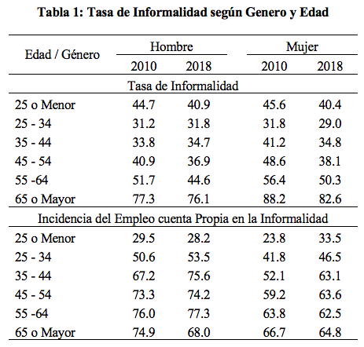
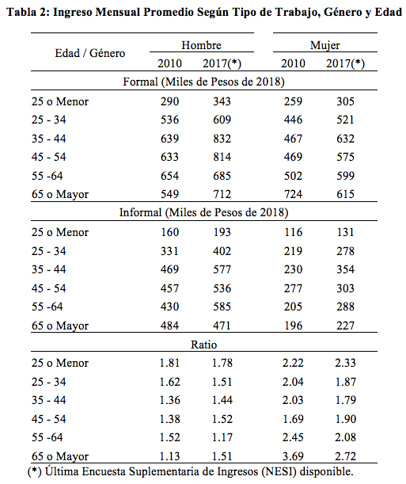
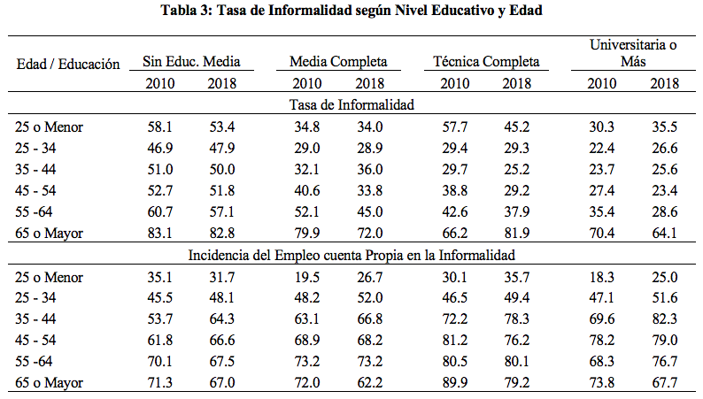
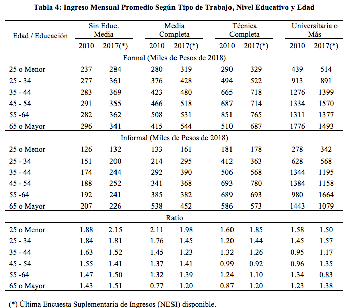

Trabajo informal y el sistema de pensiones en Chile
Publicado en la Revista Observatorio Económico de la Facultad de Economía y Negocios de la Universidad Alberto Hurtado
El sistema de pensiones en Chile para funcionar adecuadamente requiere en esencia dos elementos básicos: (1) que las Administradores de Fondos de Pensiones (AFPs) obtengan con sus inversiones una rentabilidad “adecuada” para los fondos acumulados que administran y (2) que los trabajadores generen un flujo continuo de recursos hacia sus cuentas individuales. Respecto del primero, no existe evidencia que los retornos promedio generados hayan sido considerablemente bajos ni existen una varianza sustancial entre los retornos promedio que las distintas AFPs obtienen. Por tanto, introducir mayor competencia al sistema no generaría ganancias sustanciales para los trabajadores en términos de rentabilidades, aunque si lo haría en términos de comisiones pagadas a las AFPs más bajas (y con ello potencialmente mayores flujos de fondos hacia las cuentas de ahorro individuales).
¿Es suficiente para obtener una pensión mayor comisiones de administración más bajas? Probablemente ayudará, pero definitivamente no será suficiente para lograr el aumento prometido en las jubilaciones. El problema central está en el segundo elemento mencionado más arriba, las lagunas de cotizaciones. Éstas son una parte fundamental en el rompecabezas de las pensiones en un sistema de capitalización individual como el chileno, ya que si los trabajadores no ahorran lo suficiente difícilmente obtendrán jubilaciones adecuadas.
Los trabajadores que no cotizan al sistema de pensiones son considerados trabajadores informales de acuerdo con la Organización Internacional del Trabajo (OIT) y en este articulo analizamos quienes son aquellos grupos más propensos en caer dentro esta definición. Es importante notar que desde el 2017 el Instituto Nacional de Estadística introdujo un nuevo grupo de preguntas en la Encuesta de Empleo con el fin de cuantificar más precisamente el tamaño del sector informal, no obstante para analizar con cifras comparables el comportamiento de la informalidad desde el 2010 en adelante usamos aquí la definición práctica de la OIT.
La tabla 1 muestra el comportamiento de la tasa de informalidad entre 2010 y 2018 según grupos de edad y género. En 2010, 42 y 45% de los hombre y mujeres trabajadores, respectivamente, no cotizaba al sistema de pensiones y dichas cifras se redujeron a 41 y 40% en 2018. Es destacable el cierre paulatino de la brecha entre hombres y mujeres informales.1 Cabe señalar, sin embargo, que el promedio esconde heterogeneidades importantes por edad en el comportamiento de la tasa de informalidad, ya ésta tiende a ser más alta y con brechas por género que aún persisten en desmedro de las mujeres para los trabajadores mayores de 45 años. Adicionalmente, tanto para hombres como para mujeres, el cuentapropismo representa una parte importante de los trabajadores informales. En efecto, de todos los trabajadores informales el 66% y el 58% en promedio, para hombres y mujeres, respectivamente, fueron trabajadores por cuenta propia en 2018. Estas cifras se incrementaron en 3 y 5 puntos porcentuales para hombre y mujeres en comparación con 2010. No obstante, al abrir las cifras por edad, la incidencia del cuentapropismo en la tasa de informalidad no muestra un comportamiento sistemático, siendo sólo evidente que éste es más importante mientras mayor es el trabajador y que ha tendido a incrementarse en la última década para los trabajadores entre 25 y 45.
Las brechas de ingreso entre trabajadores formales e informales y entre hombres y mujeres también son evidentes y persisten en el tiempo. La tabla 2 presenta el comportamiento de los ingresos entre 2010 y 2017 por tipo de trabajo, género y edad.2 En 2010 los trabajadores formales hombres ganaron 44% más que los trabajadores informales, en tanto que las mujeres formales ganaron más del doble que sus contrapartes informales (102%). Ocho años después estas mismas brechas se mantienen en niveles sustantivos, reduciéndose sólo en 2 y 4 puntos porcentuales, respectivamente. Adicionalmente, es notoria la heterogeneidad que existe en la brecha de ingreso entre trabajadores formales e informales por edad. En efecto, en el caso de los trabajadores hombres, aquellos menores de 25 son el grupo con mayores diferencias (casi 80% en 2017). Para las mujeres, las mayores brechas se observan entre las menores de 35 años y las mayores de 65 (130 y 170%, respectivamente en 2017). Los comportamientos de estas brechas entre 2010 y 2017 también ha sido bastante disímiles entre los grupos etarios, habiendo tanto caídas como incrementos de incluso más de 10 puntos porcentuales (ver tabla 3). Finalmente, cabe señalar que en 2017 la brecha de salarios entre hombres y mujeres en trabajos formales fue de 26% (cayendo 2 puntos porcentuales respeto de 2010), mientras que esta misma brecha en trabajos informales alcanzó el 76% (cuatro puntos porcentuales menos que en 2010).
La tabla 3 muestra el comportamiento de la tasa de informalidad entre 2010 y 2018 según nivel de escolaridad y edad. El grupo más vulnerable está claramente conformado por aquellos trabajadores que no terminaron la educación secundaria ya que casi el 60% de ellos no cotiza al sistema de pensiones. En los últimos ocho años esta cifra ha tendido a mantenerse constante. A medida que los trabajadores son más educados, sin embargo, la tasa de informalidad tiende a decrecer: 36, 33, y 28% para trabajadores con estudios secundarios completos, trabajadores con alguna carrera técnica completada y trabajadores con título universitario más respectivamente. Al igual que en el caso de los trabajadores menos educados, la incidencia de la informalidad para estos tres grupos tampoco ha sufrido cambios sustantivos en los últimos años. Adicionalmente, alrededor del 60% de los trabajadores informales son cuentapropistas y sólo para el grupo de trabajadores más educados esta proporción ha disminuido desde 65 a 60% entre 2010 y 2018.
Las brechas de ingresos entre trabajadores formales e informales son sustantivas, pero claramente decrecientes con el nivel educativo del trabajador (ver tabla 4). En efecto, en 2017 los trabajadores sin educación secundaria completa ganaron 53% más en un trabajo formal que en uno informal, en tanto que los trabajadores formales con educación secundaria completa y con educación técnica completa ganaron 34 y 21% más que sus contrapartes en trabajos informales, respectivamente. Adicionalmente, es importante destacar que en esto tres grupos educacionales se observaron caídas importantes en las brechas de ingresos entre 2010 y 2017 (de hasta 5 puntos porcentuales). En contraste, para los trabajadores más educados, esto es con educación universitaria completa o más, las brechas de ingreso entre trabajos formales e informales se incrementaron de casi 7% en 2010 a cerca de 19% en el último registro disponible. Al comparar distintos grupos etarios, es notorio que las mayores brechas de ingreso por tipo de trabajo se encuentran en los trabajadores más jóvenes para todos los grupos educativos y, nuevamente, su comportamiento entre 2010 y 2017 también ha sido bastante disímiles entre los grupos etarios y educacionales (ver tabla 4). Finalmente, es importante hacer notar que sólo en el grupo de trabajadores más educados se observan brechas en favor de trabajos informales, lo cuál está directamente relacionado con la alta incidencia de trabajo cuentapropia en esta categoría de educación (que en muchos casos representa más trabajo independiente, flexible y de altos ingresos que trabajo precario).
En suma, el porcentaje de trabajadores que está activamente en el mercado laboral pero que no cotiza es sustantivo y particularmente sobre-representado en grupos menos educados y mujeres. Adicionalmente, los ingresos que cobran los trabajadores informales son sustancialmente menores que los cobran aquellos trabajando formalmente. Esto no sólo va en desmedro de la acumulación de ahorro de forma obligatorio (no cotizan) pero también elimina cualquier posibilidad de ahorro voluntario para mejorar su estándar de vida en el futuro (en muchos casos los ingresos llegan a ser de subsistencia). ¿Porqué los trabajadores no cotizan o trabajan informalmente? ¿Existen incentivos en la política laboral que impulsan la contratación bajo esta modalidad de trabajo? Estas son preguntas que debe ser respondida de forma razonable como parte de cualquier intento integral de reforma laboral y de pensiones.




Footnotes
Note que estas cifras corresponden a aquellas de hombres y mujeres que están participando activamente en el mercado laboral. Considerando no participación, las brechas entre hombre y mujeres están lejos de cerrarse.↩︎
Los datos de ingresos fueron obtenidos de la encuesta Suplementaria de Ingresos y la última encuesta disponible es la de 2017.↩︎